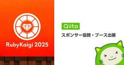

Qiita Zine
https://qiita.com/official-columns/
Dear Great Hackers
フィード

QiitaはRubyKaigi 2025にPlatinum Sponsorとして協賛・ブース出展します！
Qiita Zine
こんにちは！Qiita 運営です！ Qiitaは、RubyKaigi 2025にて、Platinum Sponsorとして協賛・ブース出展を行い、併せて関連イベントも開催いたします💁 1. ブース企画 Qiitaのブース […]投稿 QiitaはRubyKaigi 2025にPlatinum Sponsorとして協賛・ブース出展します！ は Qiita Zine に最初に表示されました。
4日前
Qiitaニュース | ワイ「AIちゃん！ワイのタスク全部やっといて！」#MCP
Qiita Zine
2025/04/16に配信された Qiitaニュースのバックナンバーです。 Dear great hackers, こんにちは！いつもQiitaをご利用いただきありがとうございます。 先週いいねが多かった投稿ベスト20( […]投稿 Qiitaニュース | ワイ「AIちゃん！ワイのタスク全部やっといて！」#MCP は Qiita Zine に最初に表示されました。
4日前
「最新技術で切り拓くエッジコンピューティング＆FPGAの未来」イベントレポート（主催：アヴネット株式会社）
Qiita Zine
AI、IoT、スマートファクトリーなど、近年注目される先端分野の成長を支えるのが、エッジコンピューティングやFPGA技術です。これらの技術にはリアルタイムのデータ処理や省電力化が必須であり、最適なハードウェアとソフトウェ […]投稿 「最新技術で切り拓くエッジコンピューティング＆FPGAの未来」イベントレポート（主催：アヴネット株式会社） は Qiita Zine に最初に表示されました。
5日前

Qiitaニュース | VSCodeでドキュメント作成するならまずこれを入れよう
Qiita Zine
2025/04/09に配信された Qiitaニュースのバックナンバーです。 Dear great hackers, こんにちは！いつもQiitaをご利用いただきありがとうございます。 先週いいねが多かった投稿ベスト20( […]投稿 Qiitaニュース | VSCodeでドキュメント作成するならまずこれを入れよう は Qiita Zine に最初に表示されました。
11日前
Qiitaニュース | 国立国会図書館のOCRライブラリが凄くよかった件(Windows向け)
Qiita Zine
2025/04/02に配信された Qiitaニュースのバックナンバーです。 Dear great hackers, こんにちは！いつもQiitaをご利用いただきありがとうございます。 先週いいねが多かった投稿ベスト20( […]投稿 Qiitaニュース | 国立国会図書館のOCRライブラリが凄くよかった件(Windows向け) は Qiita Zine に最初に表示されました。
18日前
「オブザーバビリティ・エンジニアリング」の訳者が語るオブザーバビリティに取り組む重要性とSplunk活用のポイント
Qiita Zine
ITシステムの複雑化が進む中、単なる監視に留まらず「システムの本質的な状態」を見える化する「オブザーバビリティ（Observability）」のアプローチが注目されています。システムが「どれだけ自らを説明できるか」という […]投稿 「オブザーバビリティ・エンジニアリング」の訳者が語るオブザーバビリティに取り組む重要性とSplunk活用のポイント は Qiita Zine に最初に表示されました。
19日前
Qiitaニュース | 24GB RAM + 4CPU + 200GBストレージのLinuxサーバーを無料で手にいれる方法
Qiita Zine
2025/03/26に配信された Qiitaニュースのバックナンバーです。 Dear great hackers, こんにちは！いつもQiitaをご利用いただきありがとうございます。 先週いいねが多かった投稿ベスト20( […]投稿 Qiitaニュース | 24GB RAM + 4CPU + 200GBストレージのLinuxサーバーを無料で手にいれる方法 は Qiita Zine に最初に表示されました。
25日前
目指すは来期中に合格者1万人！「さくらのクラウド検定」に込められた国内DX人材育成に向けた思い
Qiita Zine
海外勢のクラウド事業者が国内市場を席巻する中、さくらインターネット株式会社（以下、さくらインターネット）はインターネットの黎明期から事業を展開し、多くの顧客基盤を有しています。 IT業界では珍しく垂直統合型・自前主義のビ […]投稿 目指すは来期中に合格者1万人！「さくらのクラウド検定」に込められた国内DX人材育成に向けた思い は Qiita Zine に最初に表示されました。
1ヶ月前
Qiitaニュース | 「AIがあるんだからもっと安く早く作れるでしょ？」と非エンジニアに言われた時に読む（読んでもらう）記事
Qiita Zine
2025/03/19に配信された Qiitaニュースのバックナンバーです。 Dear great hackers, こんにちは！いつもQiitaをご利用いただきありがとうございます。 先週いいねが多かった投稿ベスト20( […]投稿 Qiitaニュース | 「AIがあるんだからもっと安く早く作れるでしょ？」と非エンジニアに言われた時に読む（読んでもらう）記事 は Qiita Zine に最初に表示されました。
1ヶ月前
paiza×Qiita記事投稿キャンペーン「プログラミングゲームの解答コードを投稿しよう！」
Qiita Zine
2025年01月21日（火）〜02月24日（月）にpaiza×Qiita記事投稿キャンペーン「プログラミングゲームの解答コードを投稿しよう！」を開催しました！参加いただいたみなさま、ありがとうございます。本キャンペーンに […]投稿 paiza×Qiita記事投稿キャンペーン「プログラミングゲームの解答コードを投稿しよう！」 は Qiita Zine に最初に表示されました。
1ヶ月前